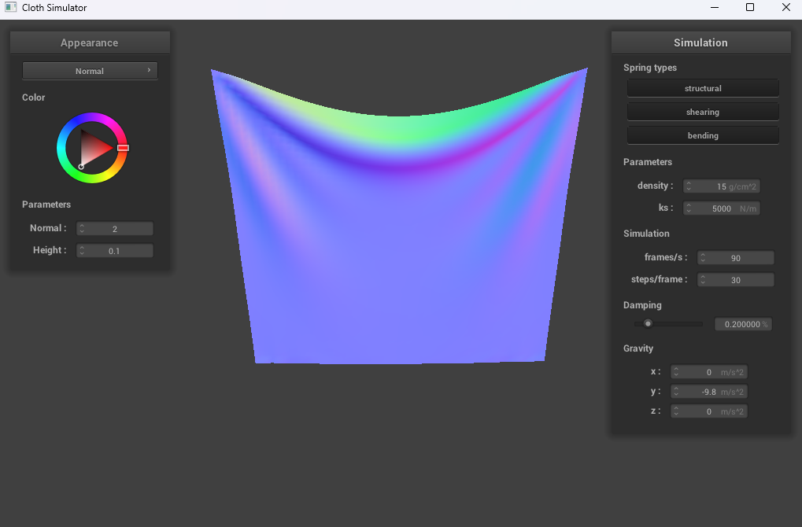
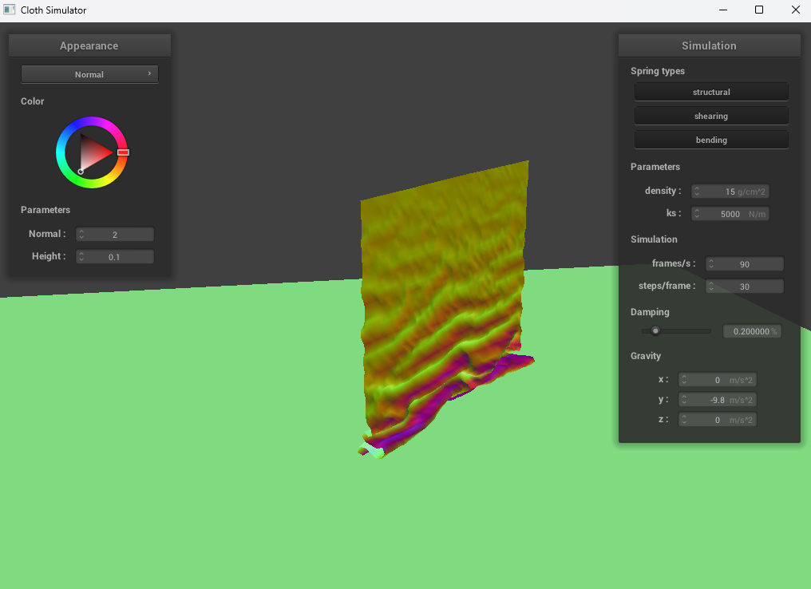
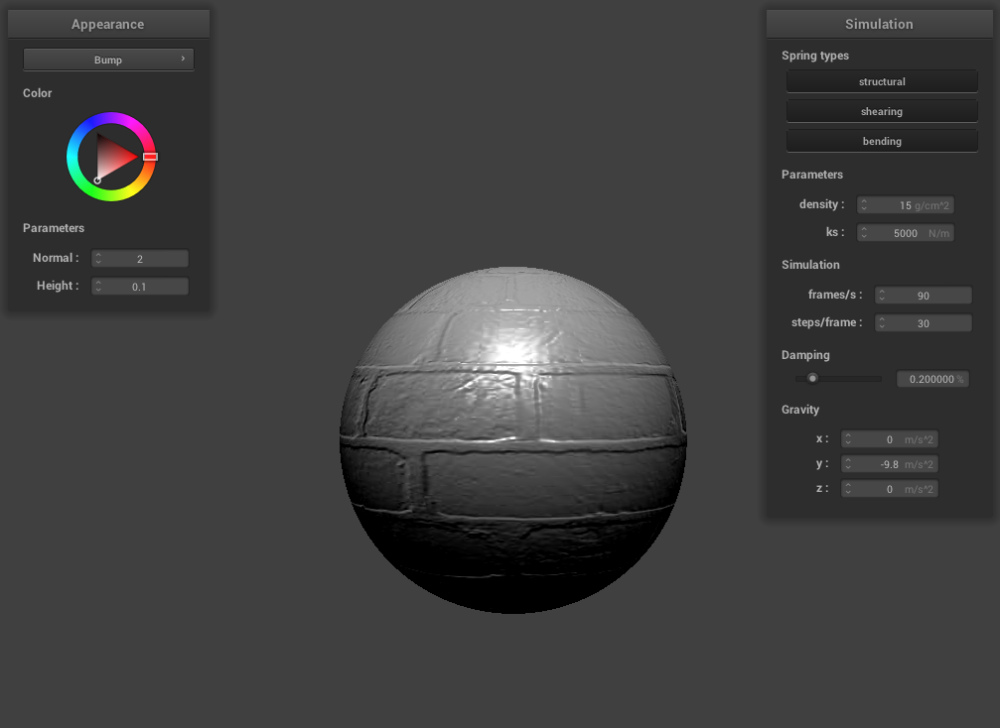
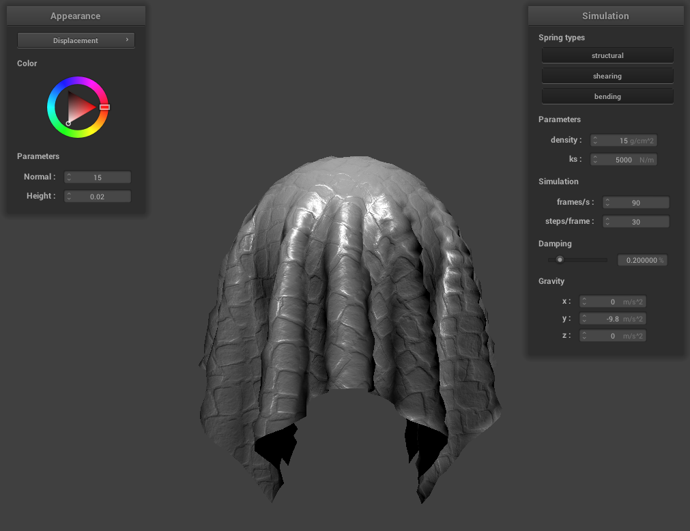

CS184/284A Spring 2025 Homework 4 Write-Up
Link to webpage: https://cal-cs184-student.github.io/hw-webpages-pjmas/
Link to GitHub repository: https://github.com/cal-cs184-student/hw-webpages-pjmas
Overview
In this project, I implemented a physically-based cloth simulation system using mass-spring dynamics, integrating forces like gravity and spring constraints to simulate the behavior of cloth. I added collision detection with external objects such as spheres and planes, as well as self-collision handling through spatial hashing to prevent cloth clipping. I applied Verlet integration to compute the motion of point masses and enforced spring constraints to maintain cloth structure. To improve visual realism, I wrote GLSL shaders for real-time rendering, incorporating lighting effects like ambient, diffuse, and specular shading. The result is a realistic cloth simulation that interacts with its environment and self-collisions while being rendered efficiently using shaders.Part 1: Masses and springs
Different view angle of cloth wireframe
Different wireframe looks
|
|
|
|
|
Part 2: Simulation via numerical integration
Different ks views
ks=500 |
ks=5000 |
ks=10000 |
Effect of Varying ks on Cloth Behavior
With a low ks: The cloth behaves in a more elastic manner. As it falls, it
stretches easily and forms more folds and wrinkles. The fabric has greater flexibility, allowing it to
curl and fold as the spring forces are weaker and unable to counteract gravity effectively.
With a high ks: The cloth becomes much stiffer. When it falls, it doesn't
fold as much and behaves more rigidly. The spring forces resist stretching more strongly, leading to a
less flexible fabric that maintains a more flat and rigid position. The cloth resists bending and
curling, resulting in fewer creases and wrinkles.
In essence, as ks increases, the cloth becomes stiffer and less likely to deform, while a
lower ks value makes the cloth more stretchable and prone to bending and folding under
its own weight.
Varies density
d=5 |

d=15 |
d=45 |
d=1500 |
With low density: The cloth appears lighter, and when it falls and reaches
a steady state, it remains relatively flat with fewer creases. This happens because the springs are not
stretched as much, causing the cloth to maintain its shape without much deformation. Essentially, the
smaller mass means the force of gravity has a reduced effect on the cloth, preventing significant
stretching.
With high density: The cloth seems to carry more weight, and as it falls,
the middle part sags noticeably more, while the creases on the sides become more pronounced. This is
due to the increased mass making the cloth more responsive to gravity. However, at extremely high
densities, the cloth becomes nearly featureless and flat. This occurs because the bottom of the cloth
has so much mass that the springs are stretched to their maximum length, leaving little room for
deformation and resulting in a flat appearance.
In summary, low density makes the cloth lighter and flatter, while high density
makes it heavier and more prone to sagging and creasing. At very high densities, the cloth can become
so heavy that it loses its characteristic folds, becoming almost flat.
Varies damping
damping = 0 |
damping = 0.5 |
With low damping: The cloth moves more freely and takes a longer time to
reach a steady state. This occurs because less energy is lost to the environment during the cloth's
motion. When the damping is set to 0, the cloth continues to swing perpetually without coming to rest
due to the absence of energy dissipation.
With high damping: The cloth appears to be moving through a viscous fluid,
and as a result, it falls much slower. The high damping forces oppose the motion, causing the cloth to
lose energy quickly and come to rest sooner. The oscillations dramatically decrease as the cloth is
slowed down more effectively.
In summary, low damping allows the cloth to move more freely and oscillate for a longer
time, while high damping significantly reduces the movement and helps the cloth reach a
steady state faster.
Screenshot of pinned4
Part 3: Handling collisions with other objects
Handling Collisions with Spheres
- Sphere-Point Mass Collision Detection: For each point mass, check if it's inside or intersecting with a sphere by calculating the distance from the point mass to the sphere's center.
- Calculate Intersection Point: If the point mass is inside the sphere, compute the "tangent point" where the point mass would intersect the sphere’s surface. This is done by extending the vector from the point mass to the sphere’s center to the surface.
- Correction Vector: Compute the correction vector needed to move the point mass from its current position to the tangent point. Apply the correction vector, scaled by a friction factor `(1 - f)` to simulate friction and prevent the point mass from penetrating the sphere.
- Simulation Update: After collision detection and correction, update the point mass position in the simulation to reflect the adjusted position, ensuring the cloth interacts properly with the sphere.
Handling Collisions with Planes
- Plane-Point Mass Collision Detection: For each point mass, check if it crosses the plane by comparing the sign of the dot product of its velocity and the plane's normal vector. If it crosses, apply a correction.
- Compute Tangent Point: If the point mass has crossed the plane, calculate the "tangent point" where the point mass intersects the plane. This point is computed by finding where the point mass’s path would intersect the plane's surface.
- Correction Vector: Apply a small offset (`SURFACE_OFFSET`) to ensure the point mass is not exactly on the plane but just above it. The correction vector is computed as the difference between the point mass’s last position and the tangent point.
- Friction and Position Update: Apply the correction vector with a friction factor `(1 - f)` to simulate damping. Update the point mass position to ensure the cloth interacts smoothly with the plane, preventing bouncing or penetration.
ks= 500 |
ks = 5000 |
ks=50000 |
Low ks: The cloth is more flexible and bendy, allowing it to warp around
the sphere more easily. As a result, more folds and creases form when the cloth rests atop the sphere.
The corrective forces from the springs are weaker, allowing more points to fall due to gravity.
Moderate ks: Increasing the ks slightly causes fewer creases
to form. The existing creases are larger and more gradual, and the cloth becomes slightly less
flexible, showing a balance between flexibility and stiffness.
High ks: The cloth becomes much stiffer and resists warping around the
sphere. There are significantly fewer folds and creases, and the cloth is less likely to fully rest
on top of the sphere. The folds that form are larger and stiffer, and the strong spring forces oppose
gravity more effectively.
Summary: As the ks increases, the cloth becomes more rigid, and less
deformation occurs. A low ks allows for more realistic and flexible cloth behavior, while
a high ks makes the cloth more rigid and resistant to gravity and deformation.
Lying on the plane

|
Part 4: Handling self-collisions
To handle self-collisions in the cloth simulation, I used a method called spatial hashing. This helps to check for collisions only between point masses that are close to each other, making the process faster.
- Dividing the space: I divide the 3D space into smaller cells. Each point mass is assigned to a cell based on its position.
- Finding nearby point masses: For each point mass, I check only the point masses in the same or nearby cells to see if they might be colliding.
- Checking for collisions: If two point masses are too close, I apply a force to push them apart and prevent them from overlapping.
- Updating the simulation: After resolving collisions, I update the point masses' positions and rebuild the grid for the next step.

|
 |
Varies density and ks

density=1 |
density=1 rest state |
density=500 begin point |
density=500 mid point |
With a low ks value, the cloth behaves like silk and forms many small folds upon initial
self-collision. As a result, the final state of the cloth looks structureless and messy, as the springs
aren't strong enough to maintain the original square shape of the cloth. However, with a much larger
ks, the cloth forms larger folds upon initial self-collision. As it collapses, the cloth
holds its square-like appearance better and folds more neatly, with the edges flush with each other.
When the ks value was low, the cloth was more likely to collide. This is because the
springs were less stiff and more elastic, allowing for more erratic movement and many small wrinkles.
Increasing the ks value made the cloth less likely to collide, as it became more rigid
and less able to undergo significant positional changes.
When the density was low, fewer and larger wrinkles formed across the cloth. Increasing
the density caused the cloth to fold more often, and the wrinkles became smaller. As the
density increased, the cloth was more likely to collide with itself due to its greater mass.
Part 5: Shaders
A shader program is used to decide how each point (pixel) on an object should look in terms of color, based on things like light and material properties. It consists of two main parts:
- Vertex Shader: It deals with the object's shape. It changes the positions of the object’s points and normals (the lines that show the surface direction).
- Fragment Shader: This one works on the individual pixels of the object. It uses the data from the vertex shader to figure out the final color of each pixel based on lighting and materials.
The Blinn-Phong model is used in the fragment shader to calculate how light hits an object. It includes three main types of lighting:
- Ambient Lighting: This is constant lighting that affects the entire object evenly, so no part of the object is in total darkness.
- Diffuse Lighting: This represents how the object’s surface gets lit. The angle of the surface to the light determines how bright or dark it is. Surfaces facing the light are brighter.
- Specular Lighting: This is the shiny effect you see on glossy surfaces. It depends on how the light hits the object and how the viewer is looking at it.
When the vertex and fragment shaders work together, they use the Blinn-Phong model to simulate realistic lighting and shading effects on 3D objects, making them look more lifelike.
|
|
|
|
|
|
Custom Texture
Bump and Displacement Mapping:
|

|
|
|
|

|
The bump and displacement mapping techniques may look similar but they have subtle differences:
- Bump Mapping: The surface of the object looks bumpy, but the outline stays smooth. It only simulates the way light interacts with the surface, making it look like there are grooves or wrinkles. No actual change happens to the object’s geometry.
- Displacement Mapping: The outline of the object looks uneven because the surface geometry is actually altered. The vertices of the object are moved physically, creating real changes in the shape of the surface. This leads to a more realistic 3D effect.
Another small difference is that displacement-mapped objects often show more visible speckles due to the specular component in the Blinn-Phong shading model, which makes shiny spots on the surface.
Different coarseness values
-o 16 -a 16 |
-o 128 -a 128 |
-o 16 -a 16 |
-o 128 -a 128 |
Increasing the coarseness level for both bump and displacement mapping results in more pronounced surface details, but the effect is more dramatic for displacement mapping due to actual changes in the object's geometry.